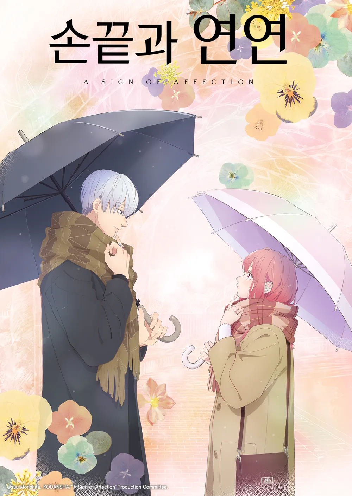

원작:Hypergryph
제작사:Yostar Pictures
감독:와타나베 유키
캐릭터 디자인:타카후지 아야
스트리밍:라프텔
편당 러닝타임:24분
화수:8화
시청 등급:15세
줄거리
'광석병──
그것은 사람들의 신체를 서서히 결정화시켜
죽음에 이르게 만드는 불치병.
제약 회사 로도스 아일랜드는 그 치료법을 연구하고,
병이 불러 일으키는 모든 문제를 해결하기 위한 조치를 취하고 있다.
감염자 구제를 주장하는 테러 조직 '리유니온 무브먼트'의 폭동을 저지하기 위해
로도스는 염국의 도시인 용문과 계약을 맺고 활동을 계속하고 있었다.
스컬 슈레더와의 싸움 이후
아미야는 미샤를 구하지 못했던 사실을 받아들이지 못하고
혼자서 슬픔에 잠겨 있었다.
한편, 용문 교외에서 폐도시를 발견한 로도스는 정찰대를 파견한다.
정찰대는 그곳에서 기묘한 현상이 일어나는 것을 알게 되는데──'
PV

손끝과 인연
드라마,순정,로맨스
×
손끝과 인연
원작:모리시타 수
제작사:교토 애니메이션
감독:무라노 유타
시리즈 구성:요나이야마 요코
스트리밍:라프텔
편당 러닝타임:24분
화수:12화
시청 등급:15세
줄거리
'이 손으로 '좋아해요'라고 전하고 싶어...
여대생인 유키는 어느 날 곤란하던 차에
같은 대학교 선배인 이츠오미의 도움을 받게 되었다.
청각 장애가 있는 탓에 귀가 들리지 않는 유키한테 동요하지 않고,
그녀를 자연스럽게 대하는 이츠오미.
자신에게 새로운 세계를 느끼게 해준 이츠오미를 유키는 점점 의식하기 시작했는데...?!
청각 장애가 있는 여자애 유키와 세계를 여행하는 대학교 선배 이츠오미의 퓨어 러브 스토리가 시작된다.'